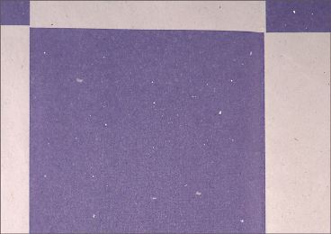
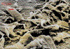
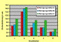
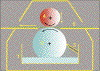

LINTING IM ZEITUNGSDRUCK
|
Beim Linting im Zeitungsdruck handelt es sich
um Papierablagerungen in nichtdruckenden sowie in
druckenden Partien auf dem Drucktuch, die im
weiteren Verlauf zu Störungen im Druckausfall
führen (Abb. 1).
Linting kann im ersten Druckwerk, aber auch in den
folgenden Druckwerken (Summierungseffekt)
auftreten.
Durch die Ablagerungen (Abb. 2) kommt es zu
erhöhten Reinigungsintervallen der
Drucktücher und damit zu häufigen und
kostenträchtigen
Produktionsausfallzeiten.
|

|
Abb. 1: Ungleichmäßiger Ausdruck wegen
Linting.
|
|
|
|
Mögliche Ursachen:
|
|
|
|
Abb. 2: Ablagerungen auf der Druckform.
|
|
|
|

|
|
Abb. 3: REM-Aufnahme von Markstrahlzellen bei
750-facher Vergrößerung.
|
|
|
|

|
|
Abb. 4: Untersuchung der Drucktuchquellung -
Dickenänderung.
|
|
|
|

|
|
Abb. 5: Prinzipskizze des
GFL-Nassstaubtestgerätes (Erläuterungen
siehe Text).
|
|
|
|

|
|
|
|
|
|

|
|
|
|
|
|

|
|
|
|
|
|

|
|
|
|
|
|
|
Aus einem vor kurzem abgeschlossenem Forschungsvorhaben
haben sich folgende Hauptparameter als Ursache für das
Linting herauskristallisiert:
Einfluss der Druckmaschine:
Ein druckmaschinenbedingter Einfluss auf das Linting ist in
der Zylindergeometrie zu sehen. Es ist bekannt, dass ein
großer Zylinderumfang weniger Linting hervorruft als
ein kleinerer Umfang des Druckzylinders.
Der Ablösewinkel, der das Nachlaufverhalten der
bedruckten Papierbahn vom Druckzylinder beschreibt, hat
ebenfalls einen Einfluss auf das Linting. Es hat sich
wiederholt gezeigt , dass das Linting mit zunehmenden
Ablösewinkel zwischen Drucktuch und Papierbahn
stärker wird.
Einfluss des Druckpapiers:
Als hoher, papierbedingter Einfluss ist der Anteil von
Markstrahlzellen im Papier bekannt. Markstrahlzellen (Abb.
3) kommen überwiegend in frischfaserhaltigen Sorten vor
und sind aufgrund ihrer Teilchengröße und ihres
Gewichts nur schwer aussortierbar. Wegen des hohen
Harzgehaltes lassen sich Markstrahlzellen bei der
Papierherstellung nicht immer in der nassen Papierbahn
verankern und bleiben dann beim Durchlauf durch die
Druckmaschine leicht am Drucktuch haften. Auf diese Weise
lösen sich nicht nur die Markstrahlzellen aus dem
Papier sondern auch die umliegenden Fasern und
Faserbruchstücke.
Ungünstige Einstellungen in der Pressenpartie und in
der Trockenpartie bei der Papierherstellung können die
Oberflächenfestigkeit des Papiers herabsetzen, bzw. es
können sich bereits bei diesen Herstellungsprozessen
Partikel aus dem Papier lösen, die schlecht gebunden
auf der Papieroberfläche liegen bleiben.
Generell hat die Staubungsneigung, also schlecht gebundene
Partikel auf der Papieroberfläche und/oder
Schnittkantenstaub, einen ungünstigen Einfluss auf das
Linting.
Einfluss der Druckfarbe:
Die Einflüsse der Druckfarbe auf das Linting sind
überwiegend in den rheologischen Eigenschaften zu
suchen. Druckfarben mit hoher Zügigkeit haben dabei
generell einen ungünstigen Einfluss. Die Zügigkeit
von Druckfarben wird auch durch die Temperatur im Farbwerk
und/oder durch mehr oder weniger starkes Emulgieren mit
Feuchtmittel beeinflusst.
Einfluss des Feuchtmittels:
Die Zusammensetzung des Feuchtmittels nimmt auf das Linting
entscheidend Einfluss. Dieser Aspekt ist jedoch immer im
Zusammenwirken mit dem jeweils zu verdruckenden Papier zu
sehen. Es kann nicht davon ausgegangen werden, dass durch
die Verwendung spezieller Feuchtmittelzusätze alle
Papiersorten besser - also mit geringeren Waschintervallen -
verdruckbar sind. Im Anwendungsfall ist es möglich, im
Labor die optimale Materialkombination auszutesten.
Weiterhin beeinflusst die Feuchtmittelmenge die
Lintingneigung. Bei hoher Feuchtmittelführung wird die
Klebrigkeit des Drucktuchs herabgesetzt und das Linting
somit verringert.
Laboruntersuchungen zeigten, dass eine Überdosierung
des Feuchtmittelzusatzes zu einer Erhöhung der
Lintingneigung führt. Der Härtegrad des
Brauchwassers für das Feuchtmittel sollte 8 °dH
betragen, um Verschiebungen des pH-Werts zu vermeiden. Eine
Absenkung des pH-Werts des Feuchtmittels kann zwar die
Lintingneigung von Papier verringern, führt aber
andererseits zu erhöhter Korrosionsgefahr von
Maschinenbauteilen.
Einfluss des Drucktuchs:
Die Oberflächenglätte in Abhängigkeit von der
Laufzeit der Drucktücher hat einen entscheidenden
Einfluss auf das Linting. Mit zunehmendem Alter der
Drucktücher nehmen die Glätte und die Klebrigkeit
der Drucktuchoberfläche zu, was das Linting negativ
beeinflusst.
Die Aufzugstärke von Drucktüchern ist ebenfalls
von großer Bedeutung für die Linting-Problematik.
Bei Über- oder Unterpressung können
Lintingerscheinungen aufgrund von Abweichungen der exakten
Abwicklung auftreten. Bei Abweichungen der exakten
Abwicklung wurde in der Praxis beobachtet, dass sich die
Ablagerungen auf dem Drucktuch in oder auch gegen die
Druckrichtung in Bewegung setzen, was zu einem
unregelmäßigen Wellenmuster im Druck führen
kann.
Durch Quellvorgänge nach Einfluss von Reinigungsmittel
ändert sich die
Drucktuch-Oberflächencharakteristik. Weiterhin kann
sich dadurch, wenn auch in geringem Maße, die
Umfangsgröße des Druckzylinders erhöhen.
Stehen - wie im Beispiel der Reihenbauweise (Gummi gegen
Gummi) - die Drucktücher in unmittelbarem Kontakt
zueinander, dann resultieren aus unterschiedlichen
Zylinderumfängen unterschiedliche
Abwicklungsgeschwindigkeiten. Es entsteht somit eine
Relativbewegung im Druckspalt, die die Papieroberfläche
belastet und Linting verstärkt.
Einfluss der Reinigungsmittel:
Verschiedene Reinigungsmittel können die
Drucktuchquellung unterschiedlich stark beeinflussen. Diese
Überlegung sollte bei der Auswahl der passenden
Reinigungsmittel berücksichtigt werden.
Abb. 4 zeigt die Ergebnisse von Drucktuch-Quellversuchen
unter Verwendung verschiedener Reinigungsmittel. Zu diesem
Zweck wurden Proben von Drucktüchern über einen
Zeitraum von 48 Stunden in einer bestimmten Menge
Reinigungsmittel luftdicht gelagert. Die Dickenunterschiede
der Drucktücher, also die Auswirkung der
Drucktuchquellung, wird dabei durch Differenz-Dickenmessung
bestimmt. Wie die Ergebnisse zeigen, reagierten die
Drucktücher unterschiedlich stark mit Quellung bei
Einfluss von Reinigungsmitteln. Weiterhin wird der Einfluss
der unterschiedlichen Reinigungsmittel auf den Quellprozess
deutlich.
|
Mögliche Abhilfen:
|
|
Einfluss der Druckmaschine:
In einer Gummi-Gummi-Druckeinheit ist der Ablösewinkel
zwischen beiden Drucktüchern meist ungleich groß.
Wenn in diesem Fall ein stark zweiseitiges Papier verdruckt
wird, kann dem Linting dadurch entgegengewirkt werden, dass
die stärker staubende Papierseite der geringeren
Belastung durch den geringeren Ablösewinkel ausgesetzt
wird.
Einfluss des Druckpapiers:
Altpapierhaltige Papiersorten neigen weniger zum Linting,
was auf die verbesserte Reinigungs- und Sortiertechnik
gegenüber frischfaserhaltigen Sorten
zurückzuführen ist. Beim Recycling werden
Kurzfaserbestandteile in hohem Maße ausgeschieden.
Durch fortschrittliche Sortier-, Stoffaufbereitungs- und
Blattbildungstechniken kann auch die Lintingneigung von
Papieren mit hohem Frischfaseranteil entscheidend reduziert
werden.
Durch Einsatz des sog. Centricleaners wird generell ein
verbessertes Aussortieren der Markstrahlzellen
ermöglicht.
Einfluss der Druckfarbe:
Die Zügigkeit der Druckfarbe muss auf die Art des
Bedruckstoffes abgestimmt sein. Übermäßiges
Emulgieren der Druckfarbe sollte vermieden werden.
Einfluss des Feuchtmittels:
Die optimal verträgliche Kombination
Bedruckstoff/Feuchtmittel ist nur durch Erfahrungswerte bzw.
Laboruntersuchungen zu treffen. Es ist darauf zu achten,
dass das Feuchtmittel in der vom Hersteller empfohlenen
Dosierung angesetzt wird und dass das Brauchwasser den
Anforderungen entspricht.
Einfluss des Drucktuchs:
Grundsätzlich sollte die Aufzugstärke in allen
Druckzylindern gleich sein und weiterhin sollten die
Drucktücher gleiche Oberflächeneigenschaften
aufweisen. Es ist darauf zu achten, dass die Klebrigkeit der
Drucktücher nicht zu hoch ist und dass diese in
regelmäßigen Abständen gewechselt
werden.
Empfehlenswert ist es dabei, alle Drucktücher der
Druckmaschine zu wechseln, um wieder gleiche Voraussetzungen
zu haben.
Wenn es die Umstände erfordern, dass in einem Druckwerk
nur ein Drucktuch gewechselt wird, sollte - um
Differenzgeschwindigkeiten zwischen den Druckwerken zu
vermeiden - durch entsprechende Änderungen der
Aufzugstärke den Abwicklungsdifferenzen der Druckwerke
entgegengewirkt werden.
Einfluss der Reinigungsmittel:
Die zu verwendenden Reinigungsmittel sollten von der FOGRA
geprüft und zertifiziert sein. Nur in diesem Fall wird
von den Druckmaschinenherstellern eine Garantie im Fall von
Schäden an der Druckmaschine, die im Zusammenhang mit
Reinigungsmittel auftreten können, übernommen.
|
Beispiel(e):
|
|
Durch Nassstaubtests im Labor kann geprüft werden, ob
die aufgetretenen vermehrten Waschintervalle beim
Zeitungsdruck auf papierbedingte Ursachen
zurückzuführen sind.
Die Bestimmung der Nassstaubneigung erfolgte nach der
GFL-Methode unter Verwendung des
GFL-Nassstaubtestgerätes. Im Rahmen von
Forschungsvorhaben bestätigte sich, dass die Ergebnisse
der Labor-Lintingtests (Nassstaubtests) eine sehr gute
Übereinstimmung mit der Praxis zeigen. D. h. Papiere,
die bei diesem Test ungünstige Ergebnisse lieferten,
führten überwiegend auch im Praxisdruck zu
erhöhten Waschintervallen aufgrund von papierbedingten
Ablagerungen auf den Drucktüchern.
Prüfbeschreibung (siehe auch Prinzipskizze auf
Abbildung 5):
Pro zu prüfender Papiersorte und -seite werden im
GFL-Nassstaubprüfgerät 200 Blatt DIN A 4 einseitig
mittels einer mikrogekörnten Stahlwalze befeuchtet. Zu
diesem Zweck wird der Flüssigkeitsbehälter (1) mit
250 ml der Testflüssigkeit gefüllt. Als
Standard-Testflüssigkeit wird Wasser (Gesamthärte
8 °dH) verwendet. Das Funktionsprinzip ist dem einer
Aniloxwalze im Flexodruck ähnlich. Die Stahlwalze (2)
rotiert als Tauchwalze im Flüssigkeitsbehälter und
befördert die Prüfflüssigkeit in die
Vertiefungen der Mikrokörnung. Der
Flüssigkeitsüberschuss wird mit einer Rakel (3)
abgestreift. Aufgrund der Mikrokörnung der
Walzenoberfläche wird nun eine definierte Menge an
Prüfflüssigkeit zur einseitigen Befeuchtung des
Papiers angeboten. Die Papierzuführung der DIN A 4
Bogen erfolgt durch manuelles Anlegen der einzelnen
Blätter. Die rotierende Gummiwalze (4) senkt sich im
2-Sekundentakt nach unten, befördert das Blatt (5)
durch den Walzennip und ermöglicht so die unter
Druckbelastung stattfindende einseitige Befeuchtung.
Werden durch diesen Vorgang Partikel aus dem Papier
herausgelöst bzw. herausgewaschen, so sammeln sich
diese im Flüssigkeitsbehälter des
Prüfgerätes. Nach dem Testdurchlauf, also nach dem
Durchlauf von 200 Blatt, werden der Inhalt des
Flüssigkeitsbehälters durch ein schwarzes
Filterpapier mit einem Durchmesser von 7 cm filtriert und
eventuell aus dem Papier gelöste Partikel aufgesammelt.
Nach der Trocknung des Filters, wird die Nassstaubneigung
messtechnisch mit Hilfe der Kontrastmessung ausgewertet.
Die Ergebnisse zeigten für das geprüfte Papier auf
beiden Seiten eine sehr hohe Nassstaubneigung mit
Kontrastwerten von 39 % für die Oberseite und 42 %
für die Siebseite. Die erhöhte Anzahl von
Waschintervallen konnte demnach auf eine papierbedingte
Ursache zurückgeführt werden.
|
Allgemeine Hinweise:
|
|
Für den Reklamationsfall:
Unbedruckte Papierproben des Auflagenpapiers und des
Vergleichspapiers für Nassstaubtests sicherstellen (pro
Sorte und Papierseite 200 Blatt DIN A4).
Reklamierte Muster von verschiedenen
Produktionszeiträumen sicherstellen.
Druckfarbenproben sicherstellen.
Zustand der Drucktücher prüfen.
Feuchtmittelprobe sicherstellen.
Produktionsdaten protokollieren.
Ergänzende Literatur:
KIRMEIER, M.:
Untersuchung des Einflusses von Druckhilfsmitteln und
Prozessparametern auf das Nassstauben (Linting) von
Zeitungsdruckpapieren.
München: FOGRA, 2000 (42.014). - Forschungsbericht
LOIBL, D.; ÖZDAMAR I.:
Linting im Zeitungsoffsetdruck.
München: FOGRA, 1982 (3.234) - Forschungsbericht
LEBEL, R. G.; PETERSON, R.:
The Web Offset Press Operation and Linting - Printing Press
Variables influence Linting Performance of Web Offset
Newsprint.
In: Pulp & Paper, Vol. 81, 12 (1980), S. 104 - 116
MANGIN, P. J.:
A Critical Review of the Effect of Printing Parameters on
the Linting Propensity of Paper.
In: Journal of Pulp and Paper Science, Vol. 17 No. 5, Sept.
(1991), S. J156 - J 163
LOIBL, D.:
Linting im Zeitungshochdruck.
Wiesbaden/München: Bundesverband Druck E.V./FOGRA, 1984
(2.117) Forschungsbericht
LINDEM, P. E.; MOLLER, K.:
Linting in Four-Colour-Offset Printing.
Proceedings International Printing & Graphic Art
Conference; Pittsburgh, PA, USA 1992
|
|
|
|
|
|
|
Kontakt:
pantel@fogra.org
|
Lin-pan-200111
|